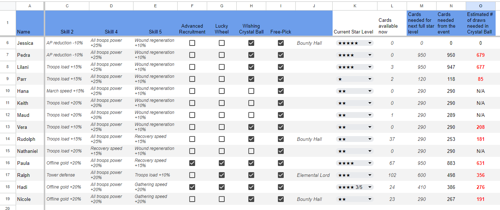

Hero Upgrade Planner
Google sheet to help you plan your hero upgrade.
Instruction
- Make a copy of the Google sheet.
- Enter the current star levels of your heroes (Column K).
- Enter the current number of cards you have available (Column L). (Note: the number shown on the hero icon will be 1 more than what you actually have available. For example, if the displayed number is 120, the actual number is 119).
Tip
Some heroes (e.g. Erika) are available from Lucky Wheel. For those heroes, it's recommended to use the Lucky Wheel to get them as close to full star as possible and then use Free-Pick Hero Card.
Example
In the example below, the best strategy for Wishing Crystal Ball is to draw for Parr and Vera (approximately 300 draws).
